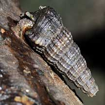

|
|
| shelled snails text index | photo index |
| Phylum Mollusca > Class Gastropoda > Family Potamididae |
| Black
chut-chut snail Cerithidea quadrata Family Potamididae updated Sep 2020 Where seen? A more slender Chut-chut, it is often seen in our mangroves, on tree trunks and on the mud near trees. Features: 3-4.5cm long. Shell long and slender with ribs of fine beads. Tip usually broken. Shell opening flared with thin lips. Operculum round and dark. The body is darker and it does not have any red markings. Sometimes confused with the Red chut-chut and Belitong. More on how to tell these snails apart. Human use: It is collected for food in many parts of Southeast Asia. |
 Pulau Semakau, Mar 09 |
 Pulau Semakau, Mar 09 |
 Pulau Semakau, Mar 09 |
| Black chut-chut snails on Singapore shores |
On wildsingapore
flickr
|
| Other sightings on Singapore shores |
 Lim Chu Kang, Apr 09 |
|
Acknowlegement
References
|